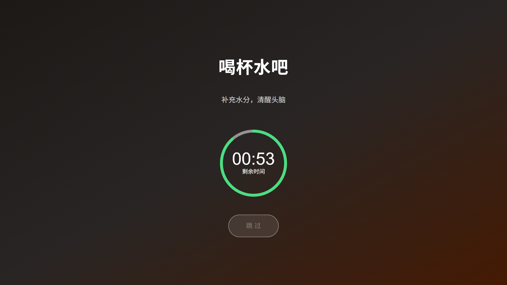
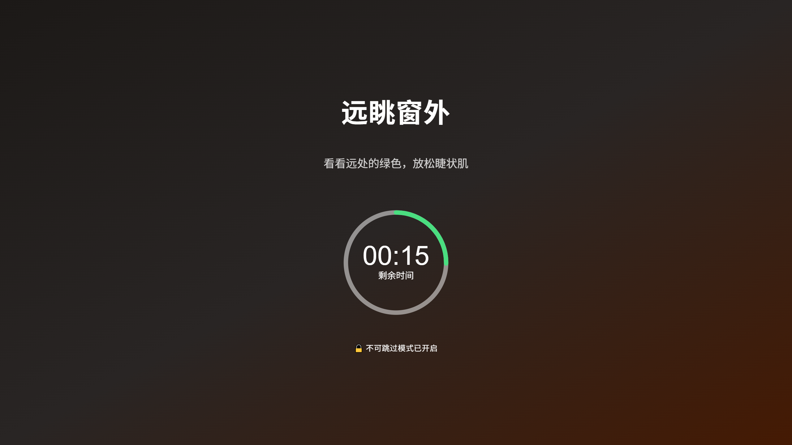
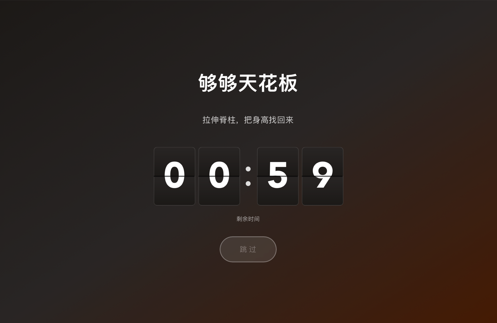
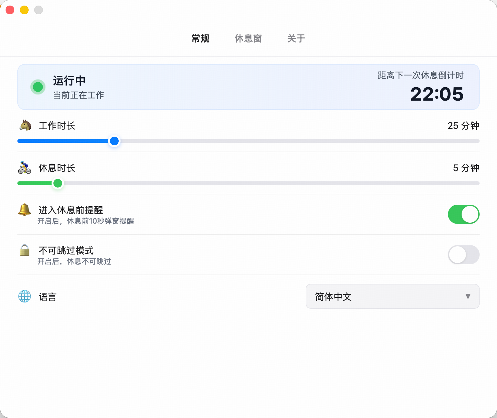
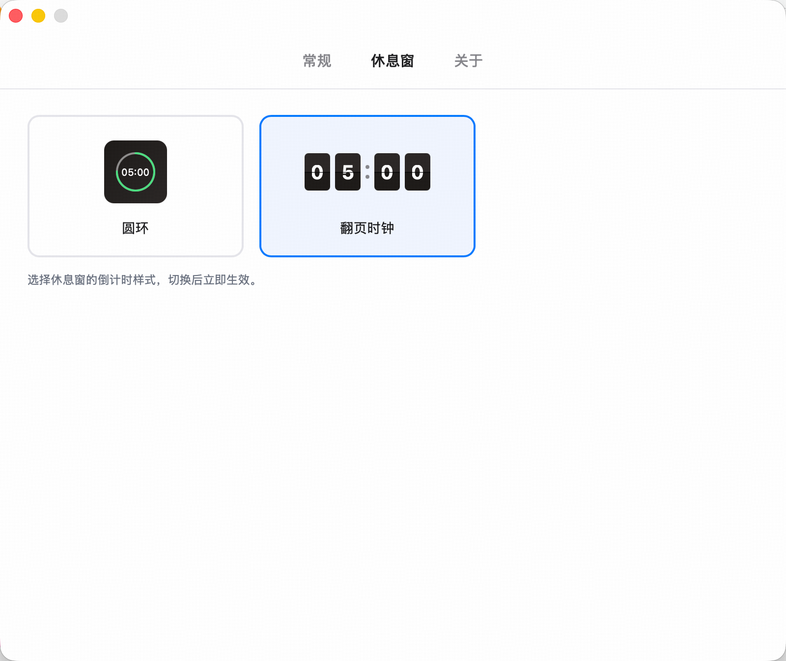
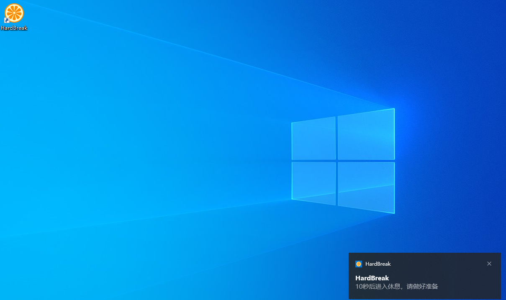

核心功能
每一个功能都经过精心设计，帮助你在效率与健康之间找到完美平衡。
默认工作 25 分钟 / 休息 5 分钟，时长可自定义。自动循环，让你的工作节奏井然有序。
休息时所有显示器均弹出休息提示窗口。无论你在哪块屏幕上操作，都不会错过提醒。
每次休息随机一条健康提示——喝水、深呼吸、远眺窗外，让休息不再枯燥。
开启后休息时无法点击「跳过」，这段时间不能回到电脑前。
圆环或翻页时钟，随手切换，立即生效。翻页时钟的每一次翻动，都提醒你时间在流逝。
调整工作/休息时长后，一键从工作阶段重新计时，不必等下一阶段，等同重启应用。
界面预览
全屏沉浸式休息窗口，圆环或翻页时钟倒计时搭配健康提示，每次休息都是一次小小的放松。
灵活配置
自定义工作/休息时长、倒计时样式、提醒方式等参数，改完时点「立即生效」马上重新计时，打造最适合你的工作节奏。

休息窗样式
休息窗的倒计时可以选圆环或翻页时钟。翻页时钟每秒翻动，质感拉满；即选即生效，下一次休息就用上。

贴心提醒
工作结束前弹出系统通知，给你充足的时间保存进度、完成手头的工作，从容进入休息。
